全文翻译
摘要
扩散模型最近已被证明能够生成高质量的合成图像，尤其是在与引导技术相结合，以在多样性和逼真度之间进行权衡时。我们探索了用于文本条件图像合成问题的扩散模型，并比较了两种不同的引导策略：CLIP引导和无分类器引导。我们发现，在逼真度和字幕相似度方面，人类评估者更倾向于后者，并且它通常能生成逼真的样本。使用无分类器引导的35亿参数文本条件扩散模型生成的样本，即使在DALL-E使用昂贵的CLIP重排序的情况下，也更受人类评估者的青睐。此外，我们发现我们的模型可以进行微调以执行图像修复，从而实现强大的文本驱动图像编辑。我们在经过筛选的数据集上训练了一个较小的模型，并在https://github.com/openai/glide-text2im上发布了代码和权重。
1. 引言
插图、绘画和照片等图像通常可以用文本轻松描述，但创作这些图像可能需要专业技能，且要花费数小时。因此，一种能根据自然语言生成逼真图像的工具，能让人们以前所未有的轻松方式创作丰富多样的视觉内容。而使用自然语言编辑图像的能力，则进一步实现了迭代优化和精细化控制，这两点在实际应用中至关重要。
近期的文本条件图像模型可以根据自由形式的文本提示合成图像，还能以语义合理的方式组合不相关的对象（Xu等人，2017；Zhu等人，2019；Tao等人，2020；Ramesh等人，2021；Zhang等人，2021）。然而，它们仍无法生成能涵盖相应文本提示所有方面的逼真图像。
另一方面，无条件图像模型可以合成逼真的图像（Brock等人，2018；Karras等人，2019a；2019b；Razavi等人，2019），有时其逼真度高到人类无法将它们与真实图像区分开来（Zhou等人，2019）。在这一研究领域，扩散模型（Sohl-Dickstein等人，2015；Song和Ermon，2020b）已成为一类很有前景的生成模型，在许多图像生成基准测试中取得了最先进的样本质量（Ho等人，2020；Dhariwal和Nichol，2021；Ho等人，2021）。
为了在类别条件设定下实现逼真效果，Dhariwal和Nichol（2021）用分类器引导增强了扩散模型，这是一种让扩散模型以分类器的标签为条件的技术。首先在有噪声的图像上训练分类器，在扩散采样过程中，利用分类器的梯度将样本导向目标标签。Ho和Salimans（2021）通过使用无分类器引导，在不单独训练分类器的情况下取得了类似的结果。无分类器引导是一种在有标签和无标签的扩散模型预测之间进行插值的引导形式。
受引导扩散模型生成逼真样本的能力和文本到图像模型处理自由形式提示的能力启发，我们将引导扩散应用于文本条件图像合成问题。首先，我们训练了一个35亿参数的扩散模型，该模型使用文本编码器以自然语言描述为条件。接下来，我们比较了两种将扩散模型导向文本提示的技术：CLIP引导和无分类器引导。通过人工评估和自动评估，我们发现无分类器引导能产生更高质量的图像。
我们发现，使用无分类器引导生成的模型样本既逼真，又反映了广泛的世界知识。在由人类评判进行评估时，在逼真度方面，我们模型生成的样本87% 的情况比DALL-E（Ramesh等人，2021）的样本更受青睐；在字幕相似度方面，这一比例为69% 。
| 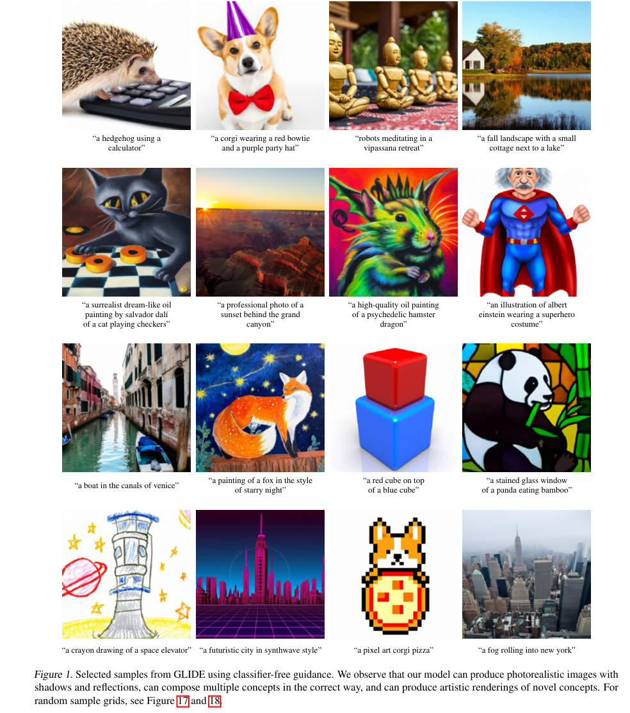 |
|---|
| 图1. 使用无分类器引导的GLIDE模型生成的部分样本。我们观察到，我们的模型能够生成带有阴影和反射的逼真图像，能以正确的方式组合多个概念，还能对新颖概念进行艺术渲染。随机样本网格，请见图17和图18。 |
虽然我们的模型可以零样本渲染各种各样的文本提示，但对于复杂的提示，它可能难以生成逼真的图像。因此，除了零样本生成，我们还为模型提供了编辑能力，使人们能够迭代地改进模型样本，直到它们符合更复杂的提示。具体来说，我们对模型进行微调以执行图像修复，发现它能够使用自然语言提示对现有图像进行逼真的编辑。模型进行的编辑与周围环境的风格和光照相匹配，包括令人信服的阴影和反射。这些模型未来的应用可能会帮助人们以前所未有的速度和轻松程度创作引人注目的定制图像。
我们注意到，我们最终得到的模型可能会显著降低制作令人信服的虚假信息或深度伪造内容所需的难度。为了在防止这些有害应用的同时支持未来的研究，我们发布了一个较小的扩散模型，以及一个在经过筛选的数据集上训练的带噪声CLIP模型。
| 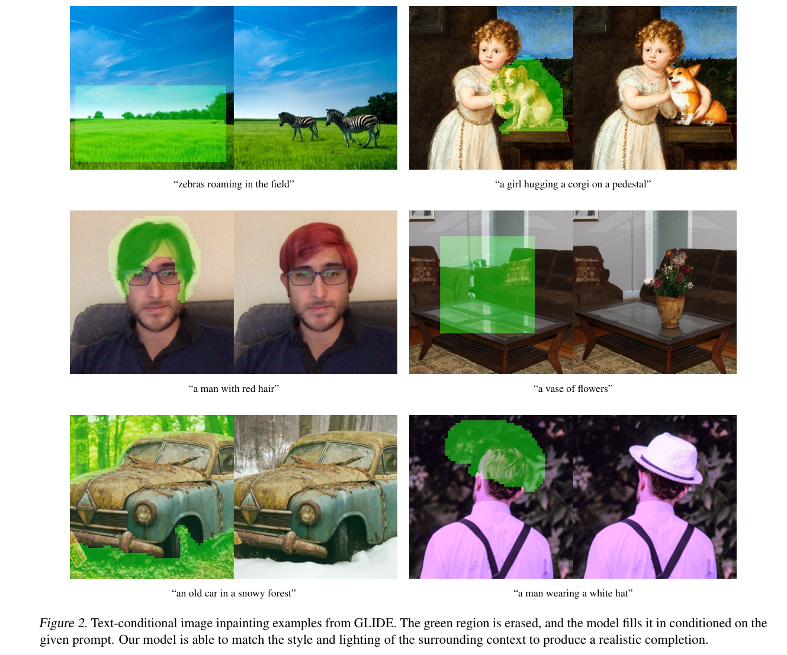 |
|---|
| 图2. GLIDE的文本条件图像修复示例。绿色区域被擦除，模型根据给定的提示进行填充。我们的模型能够匹配周围环境的风格和光照，以生成逼真的修复效果。 |
我们将我们的系统称为GLIDE，代表用于生成和编辑的引导式语言到图像扩散模型（Guided Language to Image Diffusion for Generation and Editing）。我们将经过筛选的小模型称为GLIDE（filtered）。
2. 背景
在以下部分，我们将概述最终评估模型的组成部分：扩散模型、无分类器引导和CLIP引导。
2.1 扩散模型
我们考虑由Sohl-Dickstein等人（2015年）提出，并经Song和Ermon（2020b）以及Ho等人（2020年）改进的高斯扩散模型。给定一个来自数据分布$x_{0} \sim q(x_{0})$的样本，我们通过逐步向该样本添加高斯噪声，生成一个潜在变量的马尔可夫链$x_{1}, \ldots, x_{T}$：
如果每一步添加的噪声幅度$1 - \alpha_{t}$足够小，那么后验$q(x_{t - 1}|x_{t})$可以很好地用对角高斯分布近似。此外，如果整个链中添加的总噪声幅度$1 - \alpha_{1} \cdots \alpha_{T}$足够大，$x_{T}$可以很好地用$\mathcal{N}(0, \mathcal{I})$近似。这些特性表明，可以学习一个模型$p_{\theta}(x_{t - 1}|x_{t})$来近似真实的后验：
| 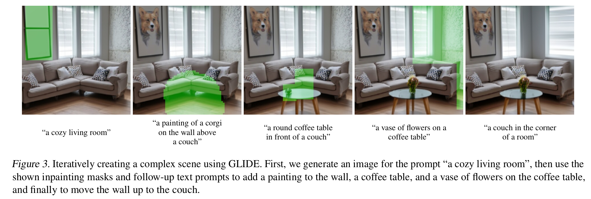 |
|---|
| 图3. 使用GLIDE迭代创建复杂场景。首先，我们根据“温馨的客厅”这一提示生成一幅图像，然后使用所示的图像修复蒙版和后续文本提示，在墙上添加一幅画、添加一张咖啡桌，并在咖啡桌上添加一瓶花，最后将墙移至沙发处。 |
通过从高斯噪声$x_{T} \sim \mathcal{N}(0, \mathcal{I})$开始，并在一系列步骤$x_{T - 1}$、$x_{T - 2}, \ldots, x_{0}$中逐渐减少噪声，就可以使用这个模型生成样本$x_{0} \sim p_{\theta}(x_{0})$。虽然$log p_{\theta}(x_{0})$存在一个可处理的变分下界，但通过优化一个替代目标（对VLB中的项重新加权）可以得到更好的结果。为了计算这个替代目标，我们通过向$x_{0}$应用高斯噪声$\epsilon$生成样本$x_{t} \sim q(x_{t}|x_{0})$，然后训练一个模型$\epsilon_{\theta}$，使用标准均方误差损失来预测添加的噪声：
Ho等人（2020年）展示了如何从$\epsilon_{\theta}(x_{t}, t)$推导出$\mu_{\theta}(x_{t})$，并将$\sum_{\theta}$固定为一个常数。他们还证明了该模型与之前基于去噪得分匹配的模型（Song和Ermon，2020b；2020a）等价，得分函数$\nabla_{x}\log p(x) \propto \epsilon_{\theta}(x_{t}, t)$。在后续工作中，Nichol和Dhariwal（2021年）提出了一种学习$\sum_{\theta}$的策略，使模型能够用更少的扩散步骤生成高质量的样本。在本文中训练模型时，我们采用了这项技术。扩散模型也已成功应用于图像超分辨率（Nichol和Dhariwal，2021年；Saharia等人，2021b）。按照扩散模型的标准公式，高分辨率图像$y_{0}$在一系列步骤中逐渐被添加噪声。然而，$p_{\theta}(y_{t - 1}|y_{t}, x)$额外以降采样后的输入$x$为条件，该输入通过在通道维度上连接（双三次上采样后的）$x$提供给模型。这些模型在FID、IS和人类比较评分方面的结果优于先前的方法。
| 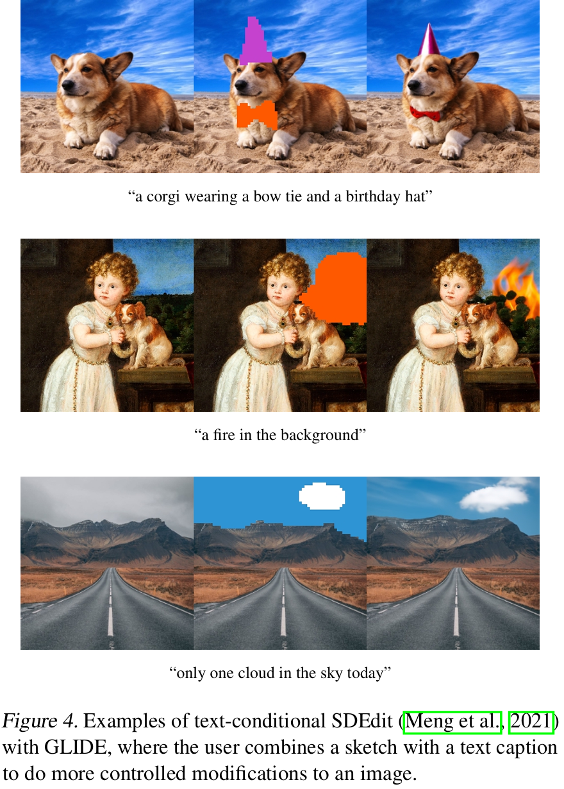 |
|---|
| 图4. 使用GLIDE进行文本条件SDEdit（Meng等人，2021）的示例，用户通过将草图与文本说明相结合，对图像进行更可控的修改。 |
2.2 引导扩散
Dhariwal和Nichol（2021年）发现，类别条件扩散模型的样本通常可以通过分类器引导得到改进。在分类器引导中，具有均值$\mu_{\theta}(x_{t}|y)$和方差$\sum_{\theta}(x_{t}|y)$的类别条件扩散模型，会被分类器预测的目标类别$y$的对数概率$log p_{\phi}(y|x_{t})$的梯度进行加性扰动。得到的新的扰动均值$\hat{\mu}_{\theta}(x_{t}|y)$为：
系数$s$称为引导尺度，Dhariwal和Nichol（2021年）发现，增加$s$可以提高样本质量，但会牺牲多样性。
2.3 无分类器引导
Ho和Salimans（2021年）最近提出了无分类器引导，这是一种引导扩散模型的技术，无需单独训练分类器模型。在无分类器引导中，类别条件扩散模型$\epsilon_{\theta}(x_{t}|y)$中的标签$y$在训练期间以固定概率被替换为一个空标签$\phi$。在采样期间，模型的输出会进一步向$\epsilon_{\theta}(x_{t}|y)$的方向外推，并远离$\epsilon_{\theta}(x_{t}|\emptyset)$，如下所示：
这里$s \geq 1$是引导尺度。这种函数形式的灵感来自于隐式分类器：
其梯度可以用真实得分$\epsilon^{*}$表示为：
为了使用通用文本提示实现无分类器引导，我们在训练期间有时会用空序列（我们也将其表示为$\emptyset$）替换文本字幕。然后，我们使用修改后的预测$\hat{\epsilon}$向字幕$c$进行引导：
无分类器引导有两个吸引人的特性。第一，它允许单个模型在引导过程中利用自身的知识，而不是依赖于单独（有时较小）的分类模型的知识。第二，当以分类器难以预测的信息（如文本）为条件时，它简化了引导过程。
2.4 CLIP引导
Radford等人（2021年）引入了CLIP，这是一种学习文本和图像之间联合表示的可扩展方法。一个CLIP模型由两个独立的部分组成：一个图像编码器$f(x)$和一个字幕编码器$g(c)$。在训练期间，从一个大型数据集中采样$(x, c)$对的批次，模型优化一个对比交叉熵损失，该损失鼓励如果图像$x$与给定的字幕$c$配对，则$f(x) \cdot g(c)$的点积较高；如果图像和字幕对应于训练数据中的不同对，则点积较低。
由于CLIP提供了图像与字幕的接近程度的分数，一些工作使用它来引导像GAN这样的生成模型朝着用户定义的文本字幕的方向生成（Galatolo等人，2021年；Patashnik等人，2021年；Murdock，2021年；Gal等人，2021年）。为了将相同的想法应用于扩散模型，我们可以在分类器引导中用CLIP模型替换分类器。具体来说，我们用图像和字幕编码的点积关于图像的梯度来扰动反向过程的均值：
与分类器引导类似，我们必须在有噪声的图像$x_{t}$上训练CLIP，以在反向过程中获得正确的梯度。在我们的所有实验中，我们使用经过明确训练以感知噪声的CLIP模型，我们将其称为带噪CLIP模型。
先前的工作Crowson（2021a；2021b）表明，未经有噪声图像训练的公开CLIP模型仍然可以用于引导扩散模型。在附录D中，我们展示了我们的带噪CLIP引导比这种方法表现更好，且无需使用数据增强或感知损失等额外技巧。我们假设使用公开CLIP模型进行引导会对样本质量产生不利影响，因为在采样过程中遇到的有噪声的中间图像对于该模型来说是分布外的数据。
3. 相关工作
许多研究致力于解决文本条件图像生成的问题。Xu等人（2017）、Zhu等人（2019）、Tao等人（2020）、Zhang等人（2021）和Ye等人（2021）利用公开的图像字幕数据集训练文本条件生成对抗网络（GANs）。Ramesh等人（2021）在van den Oord等人（2017）方法的基础上，通过训练基于离散潜在代码的自回归生成模型，实现了基于文本的图像合成。与我们的工作同期，Gu等人（2021）在离散潜在代码上训练文本条件离散扩散模型，并发现由此产生的系统能够生成具有竞争力的图像样本。
有几项研究探索了使用扩散模型进行图像修复。Meng等人（2021）发现，扩散模型不仅可以修复图像区域，还能根据图像的粗略草图（或一组颜色）进行修复。Saharia等人（2021a）发现，当直接针对图像修复任务进行训练时，扩散模型可以平滑地修复图像区域，且不会产生边缘伪影。
CLIP此前已被用于引导图像生成。Galatolo等人（2021）、Patashnik等人（2021）、Murdock（2021）和Gal等人（2021）使用CLIP引导GAN生成符合文本提示的图像。在线人工智能生成艺术社区使用未添加噪声的CLIP引导扩散取得了一些有前景的初步成果（Crowson，2021a；2021b）。Kim和Ye（2021）通过微调扩散模型以最小化CLIP损失，同时重构原始图像的DDIM（Song等人，2020a）潜在表示，从而使用文本提示编辑图像。Zhou等人（2021）训练基于扰动CLIP图像嵌入的GAN模型，得到了一种可以基于CLIP文本嵌入生成条件图像的模型。但这些工作都没有探索带噪声的CLIP模型，因此常常依赖数据增强和感知损失。
还有一些研究探索了基于文本的图像编辑。Zhang等人（2020）提出了一种双注意力机制，用于利用文本嵌入修复图像中缺失的区域。Stap等人（2020）提出了一种使用基于文本的特征向量编辑人脸图像的方法。Bau等人（2021）将CLIP与最先进的GAN模型相结合，使用文本目标修复图像。与我们的工作同期，Avrahami等人（2021）使用CLIP引导的扩散来基于文本修复图像区域。
4. 训练
在主要实验中，我们训练了一个参数规模达35亿、分辨率为64×64的文本条件扩散模型，还训练了一个15亿参数的文本条件上采样扩散模型，用于将图像分辨率提升至256×256。对于CLIP引导，我们还训练了一个分辨率为64×64的带噪ViT-L CLIP模型（Dosovitskiy等人，2020）。
4.1 文本条件扩散模型
我们采用了Dhariwal和Nichol（2021）提出的ADM模型架构，并对其进行了扩展，使其能够融入文本条件信息。对于每个带噪图像$x_t$和相应的文本描述$c$，我们的模型会预测$p(x_{t - 1}|x_t, c)$。为了以文本为条件进行预测，我们首先将文本编码成一系列$K$个标记，然后将这些标记输入到Transformer模型（Vaswani等人，2017）中。该Transformer模型的输出会以两种方式被使用：其一，最后一个标记的嵌入会替代ADM模型中的类别嵌入；其二，标记嵌入的最后一层（即一系列$K$个特征向量）会被分别投影到ADM模型中每个注意力层的维度，然后在每一层与注意力上下文进行拼接。
我们在与DALL-E（Ramesh等人，2021）相同的数据集上训练模型。我们采用了与Dhariwal和Nichol（2021）中ImageNet 64×64模型相同的架构，但将模型的宽度扩展到了512个通道，这使得模型视觉部分的参数约为23亿。对于文本编码Transformer，我们使用了24个宽度为2048的残差块，这使得文本编码部分的参数约为12亿。
此外，我们还训练了一个15亿参数的上采样扩散模型，用于将图像分辨率从64×64提升到256×256。该模型以与基础模型相同的方式融入文本条件信息，但使用了一个宽度为1024的较小文本编码器，而非2048。除此之外，该模型的架构与Dhariwal和Nichol（2021）中的ImageNet上采样器相匹配，只是我们将基础通道数增加到了384。
我们对基础模型进行250万次迭代训练，批次大小设为2048。对上采样模型进行160万次迭代训练，批次大小设为512。我们发现，使用16位精度和传统的损失缩放（Micikevicius等人，2017），这些模型能够稳定训练。总的训练计算量大致与训练DALL-E所需的计算量相当。
4.2 针对无分类器引导的微调
在完成初始训练后，我们对基础模型进行微调，使其支持无条件图像生成。这一训练过程与预训练完全相同，只是20%的文本标记序列会被空序列替代。通过这种方式，模型在保留基于文本条件生成图像能力的同时，也具备了无条件生成图像的能力。
4.3 图像修复
此前，大多数使用扩散模型进行图像修复的研究并没有专门针对该任务训练扩散模型（Sohl-Dickstein等人，2015；Song等人，2020b；Meng等人，2021）。具体来说，扩散模型的图像修复通常是通过像往常一样从扩散模型中采样来实现的，但在每次采样步骤之后，会用来自$q(x_t|x_0)$的样本替换图像中的已知区域。这种方法的缺点在于，模型在采样过程中无法看到图像的完整上下文（只能看到其带噪版本），在我们早期的实验中，这偶尔会导致出现不理想的边缘伪影。
为了获得更好的效果，我们像Saharia等人（2021a）一样，专门对模型进行微调以执行图像修复任务。在微调过程中，我们会随机擦除训练样本中的区域，然后将剩余部分与一个掩码通道一起作为额外的条件信息输入到模型中。我们对模型架构进行了修改，增加了四个额外的输入通道：第二组RGB通道和一个掩码通道。在微调之前，我们将这些新通道对应的输入权重初始化为零。对于上采样模型，我们始终提供完整的低分辨率图像，但只提供高分辨率图像中未被掩码的区域。
4.4 带噪CLIP模型
为了更好地与Dhariwal和Nichol（2021）提出的分类器引导技术相匹配，我们训练了带噪CLIP模型。该模型的图像编码器$f(x_t, t)$接收带噪图像$x_t$，并且在其他方面与原始CLIP模型使用相同的目标进行训练。我们在64×64分辨率下，按照与基础模型相同的噪声调度训练这些模型。
| 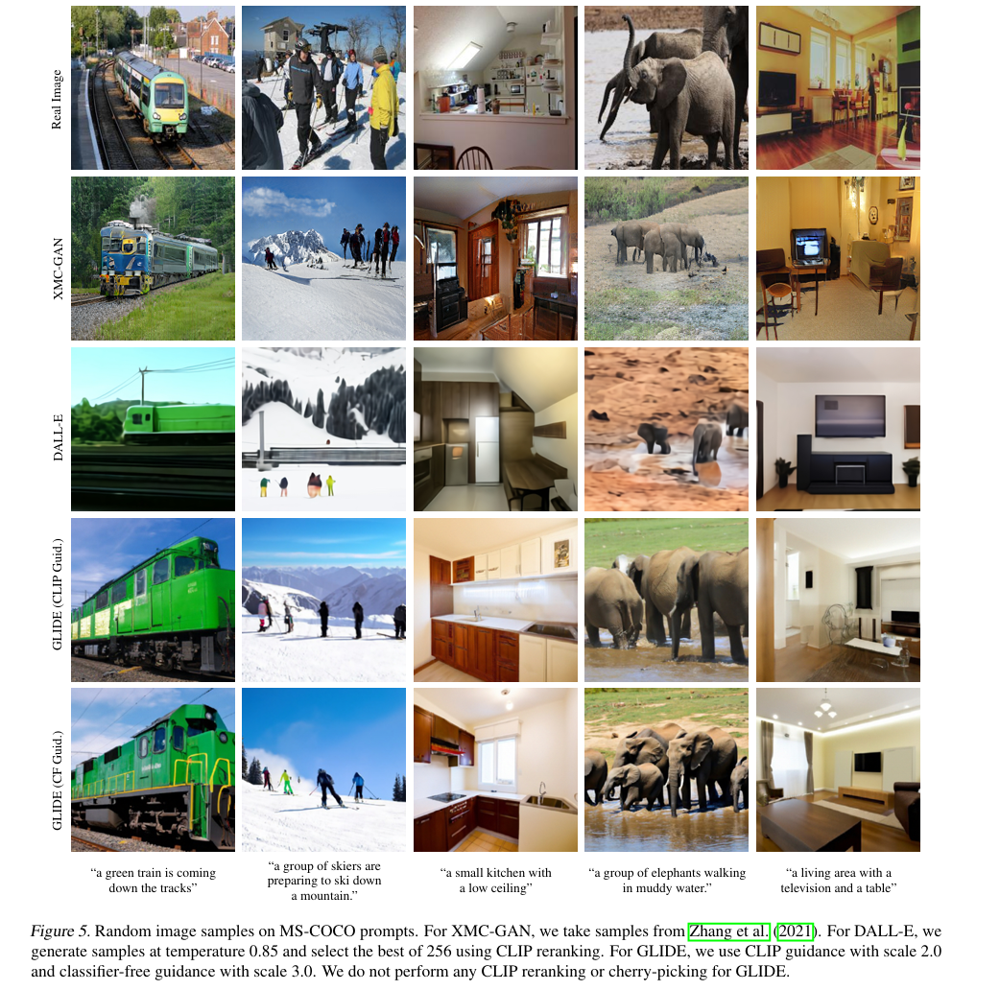 |
|---|
| 图5. 基于MS-COCO提示的随机图像样本。对于XMC-GAN，我们采用Zhang等人（2021年）的样本。对于DALL-E，我们在温度0.85下生成样本，并使用CLIP重排序从256个样本中选择最佳样本。对于GLIDE，我们使用尺度为2.0的CLIP引导和尺度为3.0的无分类器引导。我们对GLIDE不进行任何CLIP重排序或挑选操作。 |
5. 结果
5.1 定性结果
在图5中对CLIP引导和无分类器引导生成的图像进行视觉比较时，我们发现，无分类器引导生成的样本往往比CLIP引导的样本看起来更逼真。本文其余的样本均使用无分类器引导生成，下一节将阐述我们这样选择的理由。
从图1中可以观察到，采用无分类器引导的GLIDE模型能够很好地处理各种各样的提示。该模型经常能生成逼真的阴影和反射效果，以及高质量的纹理。它还能够创作出各种风格的插画，比如模仿某位特定艺术家或画作的风格，或者像像素艺术这样的常见风格。最后，该模型能够将多个概念组合在一起（例如，一只柯基犬、领结和生日帽），同时为这些物体赋予相应的属性（例如，颜色）。
| 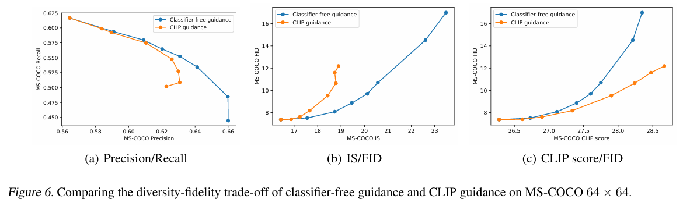 |
|---|
| 图6. 在64×64分辨率的MS-COCO数据集上比较无分类器引导和CLIP引导在多样性与逼真度之间的权衡。 |
在图像修复任务中，我们发现GLIDE模型能够根据文本提示对现有图像进行逼真的修改，必要时可以插入新的物体、阴影和反射（见图2）。该模型甚至能够在将物体编辑到画作中时，保持风格的一致性。我们还在图4中对SDEdit（Meng等人，2021）进行了实验，发现我们的模型能够将草图转化为逼真的图像编辑结果。在图3中，我们展示了如何通过零样本生成，再结合一系列图像修复编辑，使用GLIDE迭代生成一个复杂的场景。
| 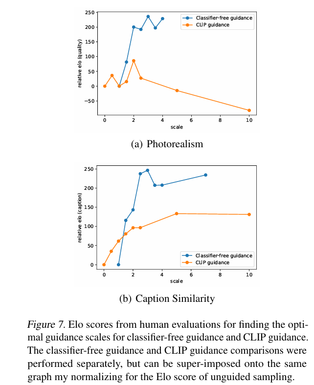 |
|---|
| 图7. 通过人类评估得出的Elo分数，用于确定无分类器引导和CLIP引导的最佳引导尺度。无分类器引导和CLIP引导的比较是分别进行的，但通过对无引导采样的Elo分数进行归一化处理，可将它们叠加在同一图表上。 |
在图5中，我们将我们的模型与之前最先进的文本条件图像生成模型进行比较，这些模型基于MS-COCO的图像描述进行生成。结果发现，我们的模型在不进行CLIP重排序或挑选的情况下，能够生成更逼真的图像。
如需更多定性比较，请参阅附录C、D、E。
5.2 定量结果
我们首先通过观察质量 - 逼真度权衡的帕累托前沿，来评估无分类器引导和CLIP引导之间的差异。在图6中，我们在64×64分辨率下对零样本MS-COCO生成任务中的两种方法进行评估。我们考察了精度/召回率（Kynkäänniemi等人，2019）、FID（Heusel等人，2017）、Inception Score（Salimans等人，2016）和CLIP分数（Radford等人，2021）。随着两种引导尺度的增加，我们观察到在FID与IS、精度与召回率以及CLIP分数与FID之间存在明显的权衡关系。在前两条曲线中，我们发现无分类器引导几乎是帕累托最优的。而在绘制CLIP分数与FID的关系曲线时，我们看到了完全相反的趋势；特别是，CLIP引导似乎比无分类器引导更能提高CLIP分数。
我们假设CLIP引导在评估CLIP模型时找到了对抗样本，而不是在匹配提示方面真正优于无分类器引导。为了验证这一假设，我们聘请了人类评估人员来评判生成图像的样本质量。在这个评估设置中，向人类评估人员展示两张256×256的图像，他们必须选择哪一个样本：1）与给定的图像描述更匹配；2）看起来更逼真。如果评估人员认为两张图像没有明显差异，那么两个模型各得半分。
使用我们的人类评估协议，我们首先分别对两种方法的引导尺度进行扫描（图7），然后比较两种方法在最佳引导尺度下的结果（表1）。我们发现，人类评估结果与CLIP分数的评估结果不一致，他们认为无分类器引导生成的样本质量更高，与相应提示的匹配度也更高。
我们还将GLIDE与其他文本条件生成图像模型进行了比较。从表2中可以看出，我们的模型在从未在MS-COCO数据集上进行过明确训练的情况下，仍能在该数据集上获得有竞争力的FID分数。我们还按照Ramesh等人（2021）的方法，计算了在MS-COCO验证集的一个子集上的FID分数，该子集已去除了所有与我们训练集中图像相似的图像，这使得验证批次减少了21%。我们发现，在这种情况下，我们的FID分数从12.24略有上升至12.89，这在很大程度上可以用使用较小参考批次时FID偏差的变化来解释。最后，我们使用人类评估协议将GLIDE与DALL-E进行比较（表3）。值得注意的是，GLIDE的训练计算量与DALL-E大致相同，但模型规模要小得多（35亿参数对比120亿参数）。此外，GLIDE的采样延迟更低，并且无需进行CLIP重排序。
| 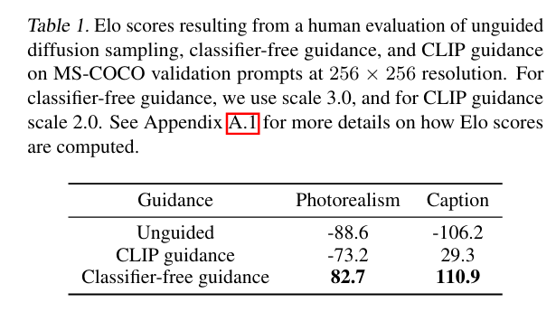 | 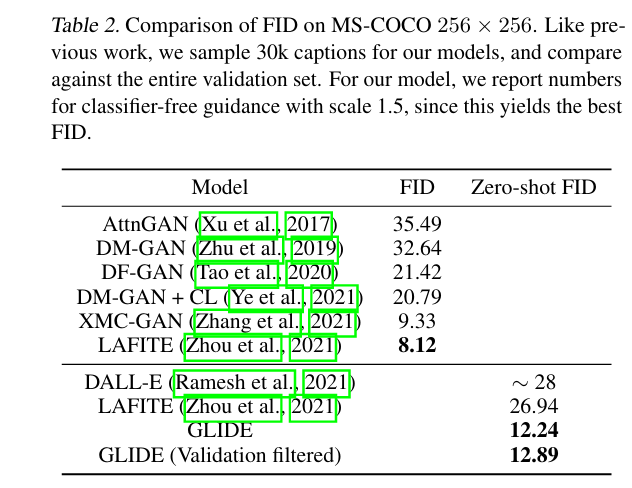 |
|---|---|
| 表1. 在256×256分辨率下，对MS-COCO验证集提示进行无引导扩散采样、无分类器引导和CLIP引导的人工评估所得的Elo分数。无分类器引导使用的引导尺度为3.0，CLIP引导使用的引导尺度为2.0。关于Elo分数的计算方法详见附录A.1。 | 表2. 在MS-COCO 256×256数据集上的FID对比。与之前的研究一样，我们为模型抽取3万个图像字幕，并与整个验证集进行对比。对于我们的模型，我们报告引导尺度为1.5的无分类器引导的FID数值，因为该设置下FID表现最佳。 |
我们对DALL-E和GLIDE进行了三组比较。第一组，比较两个模型在不进行CLIP重排序时的表现。第二组，仅对DALL-E使用CLIP重排序。第三组，对DALL-E使用CLIP重排序，同时将GLIDE的样本通过DALL-E使用的离散VAE进行处理。最后一组比较可以让我们评估DALL-E模糊的样本对人类判断的影响。我们在DALL-E模型的两个温度设置下进行了所有评估。在所有设置中，我们的模型都更受人类评估人员的青睐，即使在一些对DALL-E非常有利的配置中也是如此，这些配置允许DALL-E在测试时使用大量计算资源（通过CLIP重排序），同时降低了GLIDE样本的质量（通过VAE模糊处理）。
| 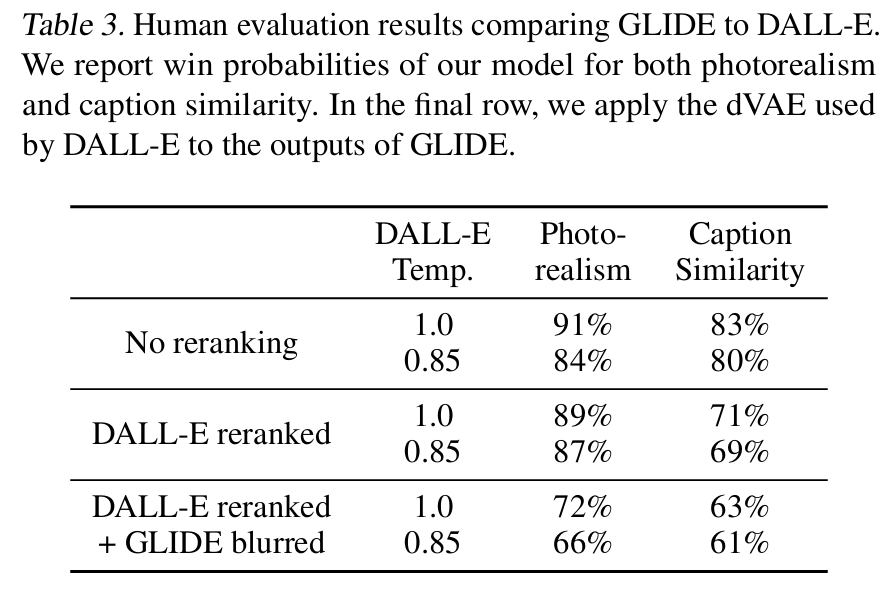 |
|---|
| 表3. GLIDE与DALL-E的人类评估结果对比。我们报告了在逼真度和字幕相似度方面，我们模型的获胜概率。在最后一行，我们将DALL-E使用的离散变分自编码器（dVAE）应用于GLIDE的输出。 |
如需查看DALL-E使用CLIP重排序以及GLIDE使用各种引导策略生成的样本网格，请参阅附录G。
6. 安全考量
我们的模型能够生成以假乱真的图像，还能让没有专业技能的用户快速对现有图像进行令人信服的编辑。因此，如果在没有安全措施的情况下发布我们的模型，制作令人信服的虚假信息或深度伪造内容所需的技能门槛将大幅降低。此外，由于模型生成的样本反映了包括数据集中存在的各种偏见，使用该模型可能会在无意间延续有害的社会偏见。
为了减轻发布这些模型可能带来的有害影响，我们在训练用于发布的模型之前，对训练图像进行了筛选。首先，我们从互联网上收集了包含数亿张图像的数据集，这个数据集与训练CLIP和DALL-E所用的数据集基本不重叠，然后对这些数据应用了多项筛选。我们筛选掉了包含人物的训练图像，以降低模型在许多以人物为中心的不良应用场景中的能力。我们还担心模型被用于生成暴力图像和仇恨符号，所以也筛选掉了不少这类图像。关于我们的数据筛选过程的更多细节，请参阅附录F.1。
我们训练了一个参数为3亿的小型模型，称为GLIDE（filtered），使用的是经过筛选的数据集。随后，我们研究了如果开源GLIDE（filtered）的模型权重，它能在多大程度上降低被滥用的风险。在这项研究中，我们使用了一系列对抗性提示对模型进行测试，没有发现模型生成可识别的人物图像的情况，这表明我们的数据筛选器的漏报率足够低。我们还对GLIDE（filtered）的某些偏见进行了探测，发现它保留了数据集中的偏见，甚至可能会放大这些偏见。例如，当要求生成 “女孩的玩具” 时，我们的模型生成的粉色玩具和毛绒动物比 “男孩的玩具” 更多。另外，当要求生成通用的文化意象，如 “宗教场所” 时，我们的模型往往强化西方的刻板印象。我们还观察到，使用无分类器引导时，模型的偏见会被放大。最后，虽然我们限制了模型生成特定类别的图像的能力，但它仍然具备图像修复能力，这一能力被滥用的可能性是未来跨学科研究的一个重要方向。详细的示例和图像，请参阅附录F.2。
上述研究是单独针对GLIDE（filtered）进行的，但没有模型是孤立存在的。例如，通常可以将多个模型组合起来，获得新的能力。为了探究这个问题，我们将GLIDE（filtered）集成到一个公开的CLIP引导的扩散程序中（Crowson，2021a），研究这两个模型组合后的生成能力。我们普遍发现，虽然CLIP模型（在未筛选的数据上训练）会让我们的模型生成一些可识别的面部表情或仇恨意象，但当它与公开的ImageNet扩散模型结合使用时，生成图像的质量大致相同。更多细节，请参阅附录F.2。
为了推动CLIP引导扩散的进一步研究，我们还训练并发布了一个在筛选数据集上训练的带噪ViT-B CLIP模型。我们将用于训练GLIDE（filtered）的数据集与原始CLIP数据集的筛选版本结合起来。为了对这个模型进行测试，我们用它来引导GLIDE（filtered）和一个公开的64×64 ImageNet模型。在我们测试的提示中，新的CLIP模型生成的暴力图像或人物图像的质量，相比现有公开CLIP模型并没有显著提升。
我们还测试了GLIDE（filtered）直接重现训练图像的能力。在这个实验中，我们针对训练集中的3万个提示进行图像采样，计算每个生成图像与原始训练图像在CLIP潜在空间中的距离，然后检查距离最小的图像对。在我们检查的所有图像对中，模型都没有忠实地再现训练图像。
7. 局限性
虽然我们的模型通常能够以复杂的方式组合不同的概念，但它有时无法准确呈现某些描述高度不寻常的物体或场景的提示。在图8中，我们给出了一些失败案例。
| 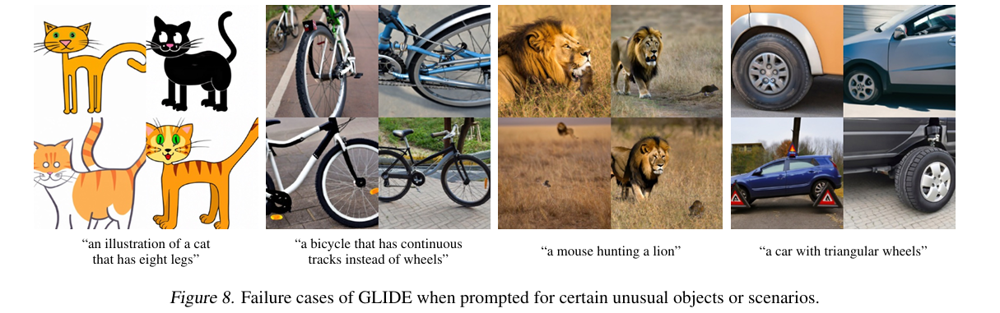 |
|---|
| 图8. GLIDE在处理某些不寻常物体或场景提示时的失败案例。 |
我们未经优化的模型在单个A100 GPU上采样生成一张图像需要15秒。这比相关的GAN方法慢得多，GAN方法通过单次前向传递就能生成图像，因此更适合用于实时应用。
A. 评估设置
A.1. 人工评估
在进行人工评估时，评估图像的真实感时，我们始终会收集1000对比较样本。评估图像与文本描述的相似度时，同样收集1000对比较样本，但在调整引导尺度的测试中，仅收集500对。
在计算胜率和Elo分数时，平局的情况会被视为每个模型各得半次胜利。这样，平局实际上会稀释每个模型的胜利次数。
计算Elo分数时，我们构建一个矩阵A，其中元素 $A_{ij}$ 表示模型i战胜模型j的次数。我们将所有N个模型的Elo分数初始化为 $\sigma_{i}=0$，$i \in[1, N]$。通过最小化以下目标函数来计算Elo分数：
A.2. 自动评估
我们使用验证集中30000个样本的提示来计算MS-COCO的FID（Frechet Inception Distance）和其他评估指标。除非另有说明，我们将整个验证集作为参考批次，并对验证图像进行中心裁剪。这种裁剪方式与Ramesh等人（2021）的方法一致，但与大多数之前关于文本条件图像合成的文献有所不同，之前的文献大多是对图像进行缩放而不是中心裁剪。然而，中心裁剪在大多数无条件和类别条件图像合成的工作中是标准做法，我们希望它在未来也能成为文本条件图像合成的标准做法。
对于CLIP分数，我们采用Radford等人（2021）发布的CLIP ViT-B/16模型，并将分数按CLIP的对数尺度（在本研究中为100）进行缩放。
B. 超参数
B.1. 训练超参数
我们的噪声CLIP模型使用ViT（Dosovitskiy等人，2020）处理64×64的图像，其补丁大小为4×4。我们在Radford等人（2021）和Ramesh等人（2021）使用的数据集按50%-50%混合的数据集上，对CLIP模型进行了39万次迭代训练，批次大小为32K。对于最终的CLIP模型，我们训练了一个权重衰减为0.0125的ViT-L模型。训练完成后，我们在更广泛的互联网图像数据集上对最终的ViT-L模型进行了3万次迭代的微调。
在针对无分类器引导和图像修复进行微调之前，我们对GLIDE（过滤版）进行了110万次迭代的预训练。此外，我们训练了一个小型过滤上采样模型，该模型具有192个基础通道和512个文本编码器通道，训练了40万次迭代。
B.2. 采样超参数
在本文展示的样本中，除了图像修复样本使用100步外，基础模型的采样我们使用150步扩散步骤。在评估时，我们对基础模型使用250步扩散步骤进行采样，因为这能使FID（Frechet Inception Distance）略有提升。
对于上采样器，我们采用一种特殊的跨步采样策略，仅用27步扩散就能获得高质量样本。具体来说，我们将采样过程分为五个阶段，在每个阶段内从以下数量的均匀间隔步骤中进行采样：10、10、3、2、2。这意味着我们在(800, 1000]范围内仅采样两个时间步，而在(0, 200]范围内采样10个时间步。这个采样策略是通过在内部验证集上扫描FID确定的。
C. 与较小模型的比较
训练我们的大型GLIDE模型是否值得？为了回答这个问题，我们使用与GLIDE（过滤版）相同的超参数，在完整数据集上训练了另一个3亿参数的模型（称为GLIDE（小型））。我们对比了大型、小型和安全模型的样本，以确定在大型多样的数据集上训练如此大型的模型能获得哪些能力提升。
在图9中，我们观察到较小的模型往往难以将属性与对象（如柯基犬）进行关联，并且在组合任务（如积木）中表现较差。所有模型通常都能生成逼真的图像，但在完整数据集上训练的两个模型在组合不寻常概念（如使用计算器的刺猬）方面表现得更好。
我们还进行了一项人工评估，对比了有和没有无分类器引导的小型和大型模型。我们首先通过人工评估为3亿参数的模型调整引导尺度，发现相比3.0，人们略倾向于为这个小型模型选择4.0的尺度。然后我们进行了一项人工评估，对比了有引导和无引导的两种模型（表4）。我们发现，无分类器引导带来的Elo分数提升幅度，比将模型规模扩大约10倍还要大。
| 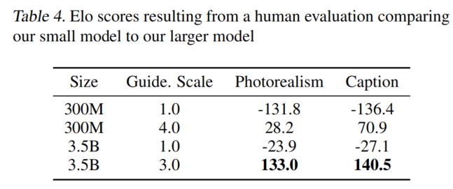 |
|---|
| 表4 对比小型和大型模型的人工评估Elo分数结果 |
D. 与未添加噪声的CLIP引导方法对比
已有研究利用公开可用的CLIP模型来引导扩散模型。但采用这种方法生成可识别的样本时，通常需要为生成过程设计一系列增强策略和辅助损失函数。我们推测，这主要是由于CLIP模型的训练方式导致的：它并未针对识别扩散采样过程中生成的噪声或模糊图像进行训练。
为了验证这一假设，我们将一种广为人知的基于CLIP引导的扩散程序（Crowson, 2021a）与我们基于添加噪声的CLIP模型的方法进行对比（图10）。我们在64×64的图像上，使用与Radford等人（2021）相同的数据集训练了一个添加噪声的ViT-B CLIP模型。然后，我们利用这个添加噪声的CLIP模型，以固定的梯度尺度15.0引导预训练的ImageNet模型生成符合文本提示的图像。由于ImageNet模型是类别条件模型，我们在每个时间步选择不同的随机类别标签。之后，我们使用扩散上采样器将生成的64×64图像上采样到256×256。结果发现，我们的方法比上述笔记本中使用的方法简单得多，且生成图像的质量相当甚至更高，这表明使CLIP模型具备噪声感知能力确实有所帮助。
| 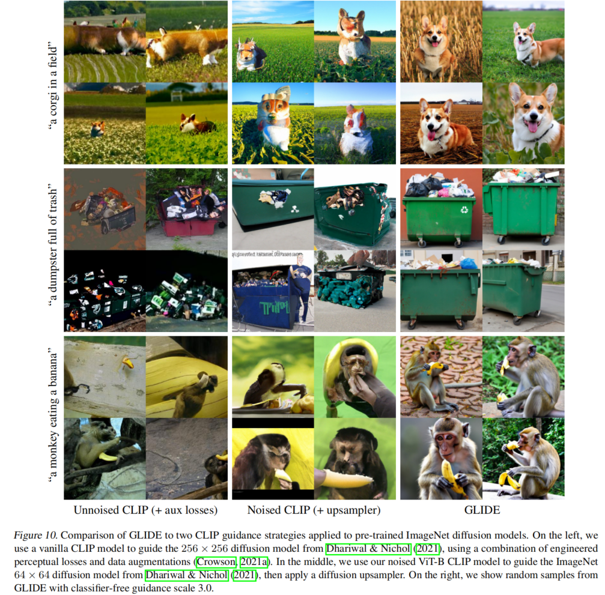 |
|---|
| 图10 GLIDE与两种应用于预训练ImageNet扩散模型的CLIP引导策略对比。左边，我们使用普通CLIP模型，结合精心设计的感知损失和数据增强策略（Crowson, 2021a），引导Dhariwal和Nichol（2021）的256×256扩散模型。中间，我们使用添加噪声的ViT-B CLIP模型引导Dhariwal和Nichol（2021）的64×64 ImageNet扩散模型，然后进行扩散上采样。右边展示的是GLIDE在无分类器引导且引导尺度为3.0时的随机样本。 |
E. 与混合扩散模型的比较
虽然混合扩散模型（Avrahami等人，2021年）的代码尚未公开，但我们依据该论文中展示的一些提示对我们的模型进行了评估（图11）。我们发现，经过微调的模型有时会忽略给定的文本提示，生成的图像似乎仅受周围上下文的影响。为了缓解这种现象，我们还在完全屏蔽上下文的情况下对模型进行评估。这是Sohl-Dickstein等人（2015年）首次提出的图像修复技术，在该技术中，模型仅通过带噪声的掩码图像 (x_{t}) 来获取上下文信息。采用这种方法后，模型似乎能更稳定地遵循文本描述，但有时生成的对象与场景的融合不够自然。
| 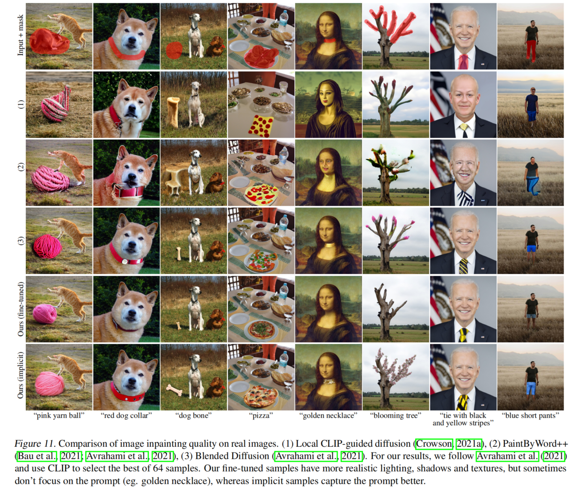 |
|---|
| 图11 在真实图像上的图像修复质量对比。(1) 局部CLIP引导扩散（Crowson，2021a）；(2) PaintByWord++（Bau等人，2021年；Avrahami等人，2021年）；(3) 混合扩散（Avrahami等人，2021年）。对于我们的结果，我们按照Avrahami等人（2021年）的方法，使用CLIP从64个样本中选择最佳样本。我们经过微调的样本具有更逼真的光照、阴影和纹理，但有时会偏离提示（例如金项链），而隐式样本则能更好地捕捉提示内容。 |
F. GLIDE（过滤版）
F.1. GLIDE（过滤版）的数据过滤
为了从数据集中去除包含人类及类人对象的图像，我们首先为训练集中的随机样本收集了数千个布尔标签。在训练分类器时，我们将每张图像的较小边调整为224像素，然后沿着较长边的两端和中间进行三次裁剪。我们将这三个裁剪后的图像输入到预训练的CLIP ViT-B/16模型中，并对得到的特征向量进行平均池化。最后，我们使用带有径向基函数（RBF）核的支持向量机（SVM）拟合这些特征向量，并调整偏差，使其误报率低于1%。我们在另一组1024个样本上测试了该模型，结果未出现误报情况（即我们手动检查模型判定为不包含人物的图像，确实未发现人物图像）。
在开发人物过滤器时，我们旨在可靠地检测各种环境中的所有人，然而，对于现代面部检测系统而言，这通常是一项艰巨的任务，尤其是在处理各种人口统计特征的人群时（Buolamwini & Gebru，2018；Santurkar等人，2019）。在最初的实验中，我们使用ViT-B/32而非ViT-B/16进行特征提取，观察到在低光照或遮挡条件下的人物有时会被分类器遗漏。不过，在切换为使用具有更高隐藏状态分辨率的ViT-B/16进行特征提取后，之前观察到的所有失败情况都得到了改善。
为了去除包含暴力物品的图像，我们首先使用CLIP在数据集中搜索 “武器”“暴力” 等关键词和短语。在收集了几百个正例和反例后，我们训练了一个与上述类似的SVM。然后，我们对该SVM决策边界附近的样本进行标注，以获得另外几百个反例和正例。经过多次迭代这一过程，我们调整最终SVM的偏差，使其误报率低于1%。在另一组1024个样本上测试时，该分类器未产生误报。
最初，我们采用与去除仇恨符号类似的方法，使用CLIP在数据集中搜索特定关键词。然而，我们发现这种方法找到的相关图像极少，这表明我们的数据源可能已经以某种方式对这类内容进行了过滤。尽管如此，我们还是使用搜索引擎收集了美国两种常见仇恨符号（卐字和邦联旗）的图像，并基于这些数据训练了一个SVM。我们采用上述主动学习过程在决策边界附近收集更多反例（但未找到正例），并调整所得SVM的偏差，使其在这个精选数据集上的误报率低于1% 。
F.2. GLIDE（过滤版）的偏差和CLIP引导
GLIDE（过滤版）仍然存在偏差，这不仅表明图像数据集中的偏差超出了人物图像范畴，还反映出我们在数据过滤过程中所做选择存在的偏差。例如，当要求模型生成 “男孩的玩具” 和 “女孩的玩具” 时，会得到不同的输出（图12）。当要求生成 “宗教场所” 时，模型倾向于生成类似教堂的建筑，并且这种偏差会因无分类器引导而加剧（图13）。
| 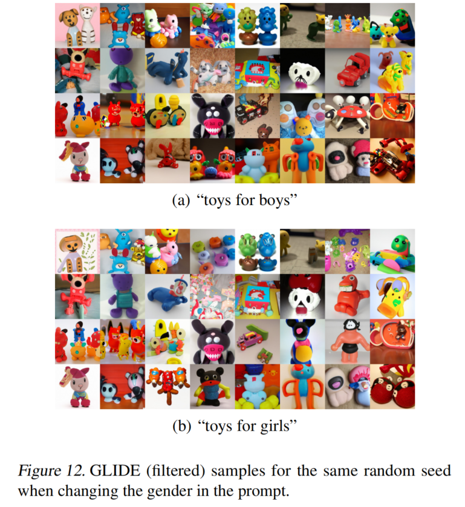 | 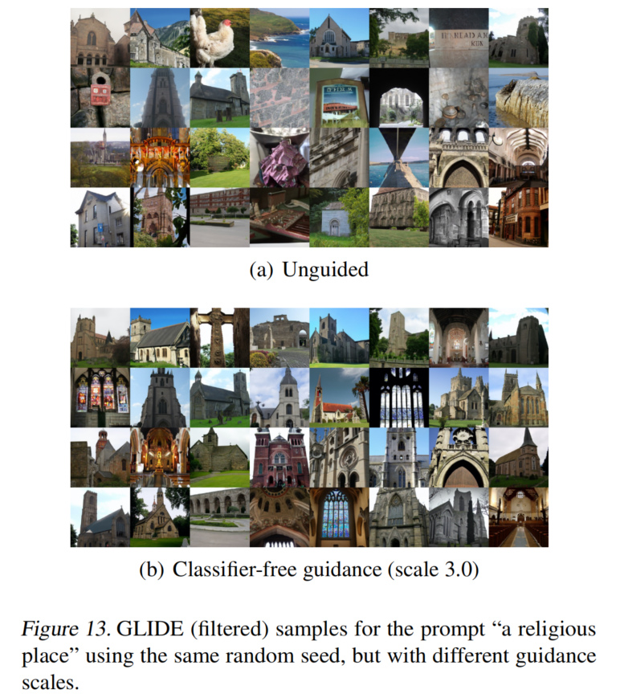 |
|---|---|
| 图12 GLIDE（过滤版）在提示中改变性别时，相同随机种子下的样本生成结果 | 图13 GLIDE（过滤版）在提示为 “宗教场所” 时，使用相同随机种子但不同引导尺度的样本生成结果 |
我们预计仇恨符号分类器存在较强的美国和西方偏见，因为它仅在美国两种常见仇恨符号上进行训练。因此，训练数据中可能仍然保留了我们未主动过滤的仇恨符号图像。不过，我们确实发现过滤后的模型生成非仇恨符号图像的能力有所下降（图14）。我们推测这可能是由于GLIDE（过滤版）可用的数据集较小所致。
| 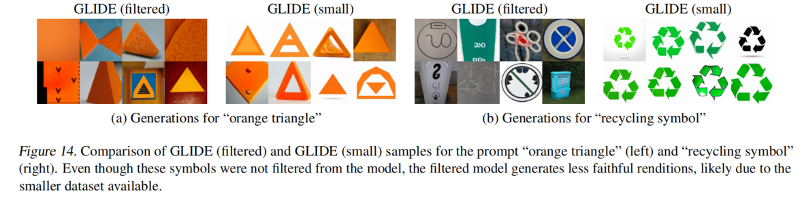 |
|---|
| 图14. GLIDE（过滤版）和GLIDE（小型）针对“橙色三角形”（左）和“回收标志”（右）提示生成样本的对比。尽管这些符号并未从模型中过滤掉，但过滤版模型生成的图像还原度较低，这可能是由于其可用数据集较小。 |
我们还将GLIDE（过滤版）集成到一个公开可用的CLIP引导扩散程序中（Crowson，2021a）。我们发现，这种组合能够生成一些类似人脸的对象（例如图15）。虽然使用公开扩散模型的原始CLIP引导扩散程序在我们的提示下通常能生成更易识别的图像，但这些发现凸显了我们过滤方法的局限性之一。我们还发现，GLIDE（过滤版）在某些情况下仍然表现出强烈的西方偏见，其程度往往超过现有的公开扩散模型（图16）。
| 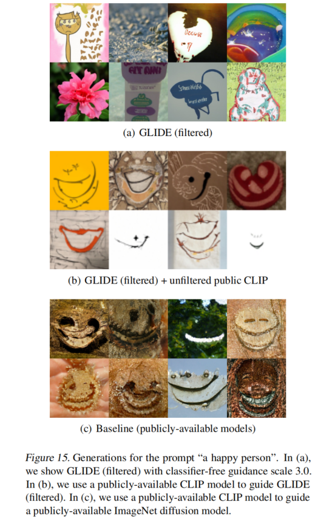 | 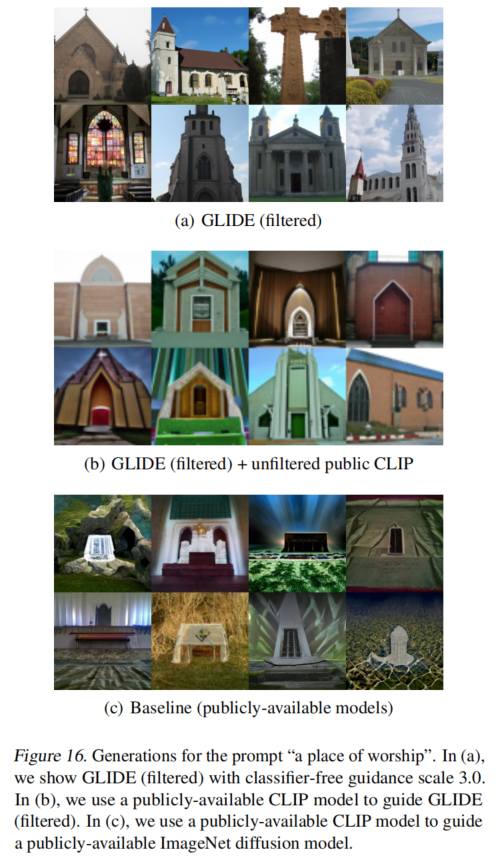 |
|---|---|
| 图15. 提示为“一个快乐的人”时的生成图像。(a)中展示的是引导尺度为3.0的无分类器引导的GLIDE（过滤版）生成的图像。(b)中我们使用公开可用的CLIP模型来引导GLIDE（过滤版）。(c)中我们使用公开可用的CLIP模型来引导公开可用的ImageNet扩散模型。 | 图16. 提示为“一个礼拜场所”时的生成图像。在（a）中，展示的是引导尺度为3.0的无分类器引导的GLIDE（过滤版）生成的图像。在（b）中，我们使用公开可用的CLIP模型来引导GLIDE（过滤版）。在（c）中，我们使用公开可用的CLIP模型来引导公开可用的ImageNet扩散模型。 |
G. 更多样本
在图17和图18中，我们展示了使用相同随机种子，在无引导、分类器自由引导和CLIP引导下，我们模型生成的4×4随机样本网格，以及DALL-E生成的样本。我们发现，分类器自由引导最可靠地生成了最高质量的图像。对于DALL-E，我们为每个提示采样512张图像，并使用CLIP重排选择前16张。对于所有其他样本网格，我们展示16个未经CLIP重排的随机样本。
| 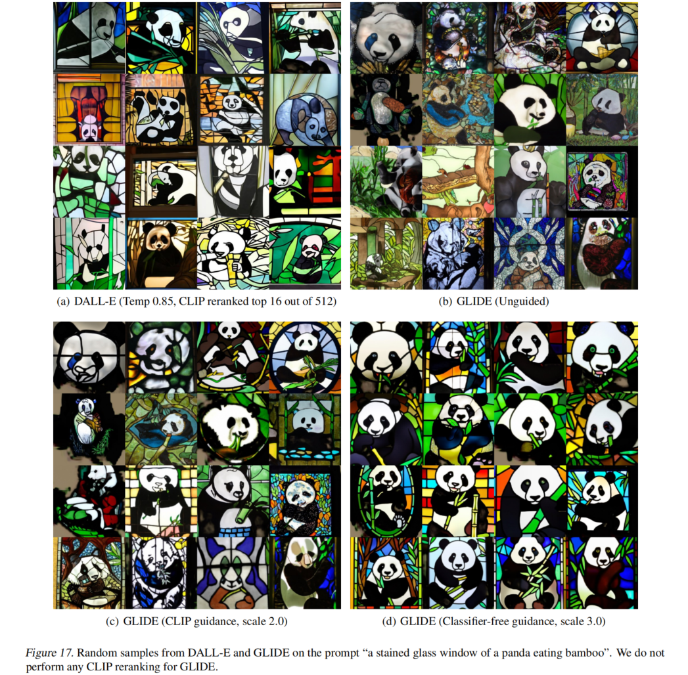 |
|---|
| 图17 DALL-E和GLIDE在“一只吃竹子的熊猫的彩色玻璃窗”提示下的随机样本。GLIDE未进行任何CLIP重排。 |
| 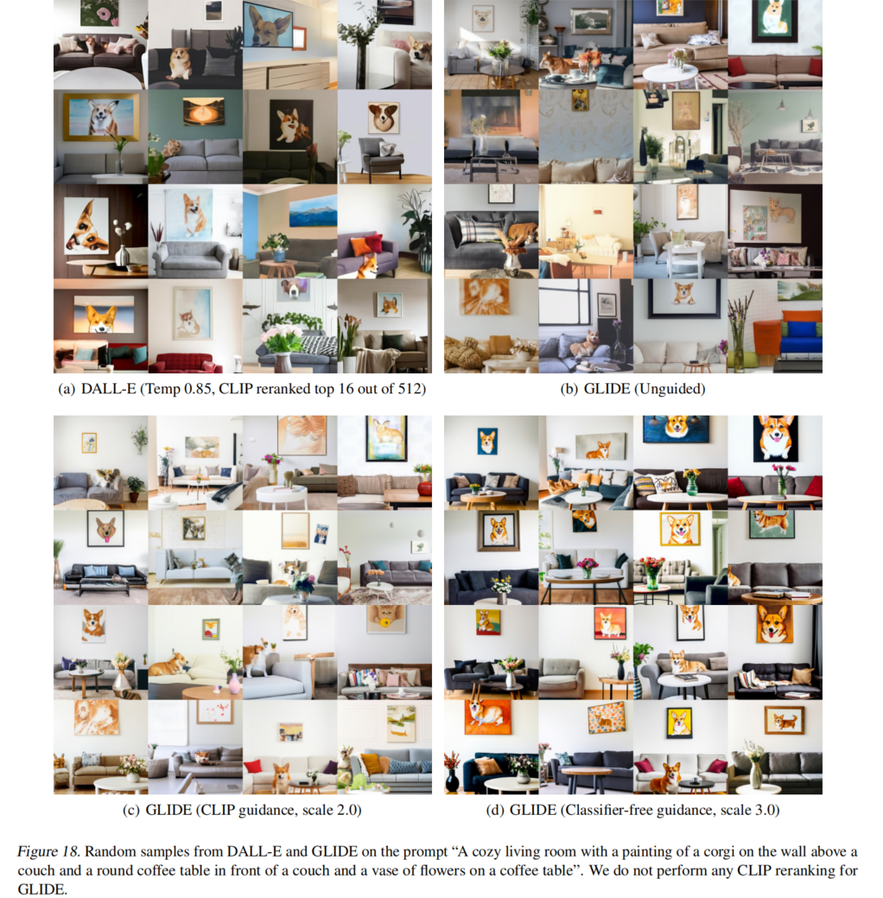 |
|---|
| 图18 DALL-E和GLIDE在“一个舒适的客厅，沙发上方的墙上有一幅柯基的画，沙发前有一张圆形咖啡桌，咖啡桌上有一个花瓶”提示下的随机样本。GLIDE未进行任何CLIP重排。 |
文章总结
这篇论文
创新点与主要思想
- 将
损失函数与模型训练
不足之处
- 复杂提示处理能力有限：模型虽能以复杂方式组合不同概念，但遇到描述高度不寻常物体或场景的提示时，有时无法准确呈现。比如生成 “有八条腿的猫”“用连续履带代替轮子的自行车” 等图像时会失败，这表明模型对极端或新颖概念的理解和生成能力有待提升。
- 生成速度较慢：未优化的模型在单个A100 GPU上采样生成一张图像需要15秒，相比相关GAN方法，后者能在单次前向传递中生成图像，更适用于实时应用场景。较慢的生成速度限制了模型在对时间要求较高的场景中的应用，如实时交互的图像生成场景。
- 存在偏差问题：模型生成结果存在偏差，会受到训练数据集的影响。在生成 “男孩的玩具” 和 “女孩的玩具” 时，会出现明显差异；被要求生成 “宗教场所” 时，倾向于生成类似西方教堂的建筑，且无分类器引导会放大这种偏差。这不仅反映了数据集中存在的偏见，也体现出研究在处理数据偏差、确保模型生成结果公平性方面的不足。
- 数据过滤的局限性：尽管对训练数据进行了过滤，以降低模型生成有害内容的风险，但仍存在问题。一方面，过滤后的模型在生成某些未被过滤的符号（如橙色三角形、回收标志）时，还原度较低；另一方面，将GLIDE（过滤版）与公开的CLIP引导扩散程序结合时，仍能生成类似人脸的物体，说明过滤方法未能完全消除模型生成敏感或不期望内容的可能性。